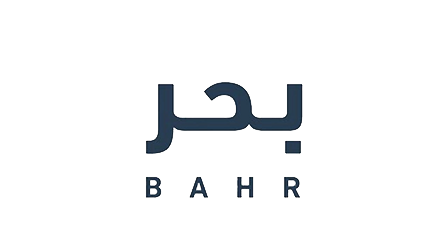

منصة بحر
نبذة عن المنصة:
منصة بحر هي مبادرة من هدف لتنمية الموارد البشرية. حتى مطلع عام 2020 تجاوز عدد المستقلين في هذه المنصة 36000, كما تجاوز عدد المشاريع 13000 مشروع منجز.كيف تعمل:
منصة بحر تتيح لصاحب العمل طلب خدمات معينة خاصة بمشروعه, فيقوم مقدمي الخدمات بتقديم عروض لإنجاز هذا العمل, في حال تم قبول واختيار العرض المقدم من قبل المستقل فستصله رسالة على بريده الإلكتروني تخبره بذلك, كل ما يقوم به المستقل بعد ذلك هو إنجاز العمل حسب الاتفاق الذي تم في وصف المشروع, وبعد ذلك يقوم بتسليم المشروع عن طريق إرافقه من خلال موقع بحر, في حال استلام العميل للطلب سيتلقى المستقل مباشرة مستحقاتك المالية عبر حسابه البنكي المسجل في المنصة.طبيعة الخدمات المقدمة:
تستقطب المنصات مختلف المشاريع والمهارات وتعمل كوسيط بين العميل والمستقل, تندرج معظم المهارات والمشاريع تحت التصنيفات التالية, التصميم والابتكار,الترجمة, تطوير البرامج, الكتابة والتحرير, التسويق والمبيعات, الفيديو والتصوير.ماهي مميزات منصة بحر؟
تمتاز منصة بحر بعدد من المميزات عن بقية المنصات منها:- جميع المستقلين في منصة بحر موثقين من خلال منصة أبشر, مما يجعل العميل مطمئن في التعاملات عبر المنصة
- يمكن تقسيم المشروع إلى عدة مراحل, ليسهل إدارته, وتقسيم العمل والدفعات
- يتم تحويل الرصيد مباشرة إلى حسابك البنكي
- سهولة وسرعة المنافسة على المشاريع, والحصول على تنبيهات في حال تمت إضافة المشاريع أو قبول العرض المقدم من قبل المستقل
- كم تقدم المنصة صفحة تعرض فيها أسماء المستقلين بالتقييمات والمشاريع المنجزة, بالإضافة إلى التسعيرات, أيضا توفر المنصة صفحة تشرح فيها طريقة التسجيل كمستقل أو كعميل
- أيضا من الأمور التي يجب الانتباه لها هي وثيقة شروط الاستخدام الخاصة بالموقع, يجب قراءتها بعناية تجنبا لأي عواقب مترتبة على مخالفة هذه الشروط